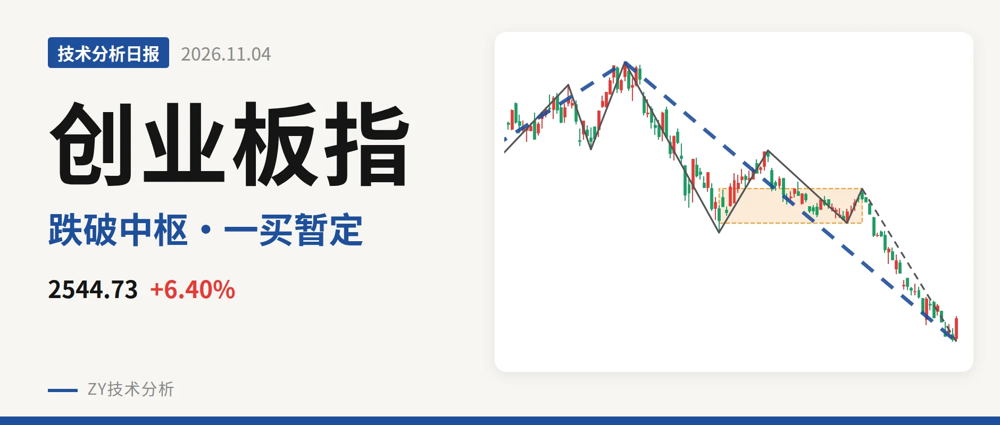
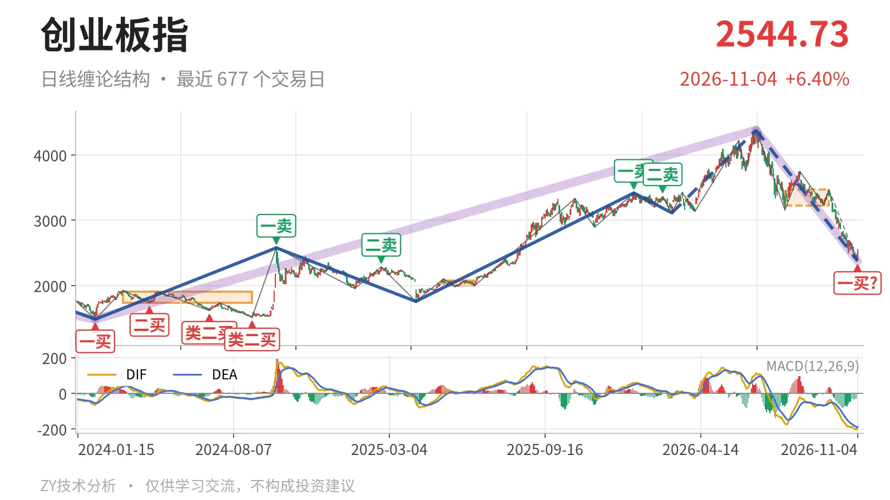
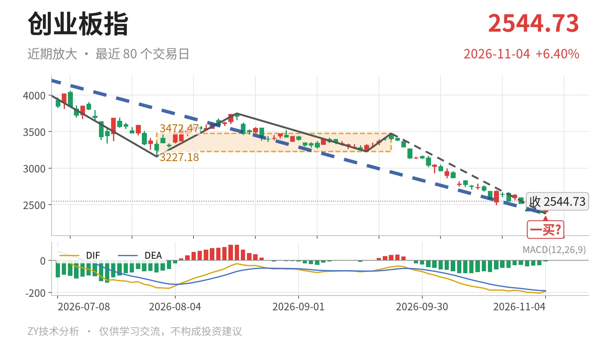

创业板指｜失守中枢下沿，暂定一买落在2376.28点

最近日线中枢 3227.18—3472.47点，收盘位于中枢之下
一句话：收盘仍在最近中枢下方，末笔未现底背驰，一买位置存变
📉 走势结构：上涨后深跌，下跌线段还没结束
日线级别仍处于6月25日以来的下跌线段中，该线段还没有结束。3月9日至6月25日的上涨线段从3111.88点走到4380.41点，但6月25日以来回落已跌去45.8%，下跌线段含5笔，最新一笔仍在延续。更大级别里，2024年2月5日至2026年6月25日的上涨走势未走完，6月25日以来的下跌走势同样没有结束，因此这里先按上涨段后的深幅回落处理，而不是更大级别直接转跌。当前矛盾在：上涨段未走完，但回调段已跌破最近日线中枢下沿，强弱切换很快。

🧭 中枢位置：跌破中枢下沿，中枢上移后失守
最近一个日线笔中枢在7月30日至9月22日形成，区间3227.18—3472.47点，中轴3349.83点，目前看仍未定型。最新收盘2544.73点低于该中枢下沿21.1%，已经向下离开中枢。这个中枢比2025年5月14日至2025年6月23日的中枢1996.96—2076.91点、2024年3月18日至2024年8月29日的中枢1735.28—1907.02点都明显上移，但收盘跌穿下沿，说明9月以来的回落不是中枢内震荡。下方更大级别线段中枢2122.32—2282.65点仍未被触及，最新价还在此上方。
🔍 买卖点：11月4日一买只是暂定
日线笔级别最新出现11月4日一买，低点2376.28点，所在笔为9月22日至11月4日的下跌笔。该笔还在延续，因此这个一买只能按暂定的一买处理，会随这一笔的继续下探而变化。更早的1月13日一卖3416.84点、2月25日二卖3363.18点，之后都被6月25日4380.41点新高破坏，只对应较小级别。线段级别3月9日三买3111.88点也已跌破，三买后的上涨段被破坏。

⚡ 背驰：当前下跌笔未形成新低不新弱
对比6月25日至7月30日下跌笔与当前9月22日以来的下跌笔。前一笔最低3158.14点，绿柱面积1837，DIF低点-171.1；当前笔最低2376.28点，价格新低，但绿柱面积1107小于1837。问题是DIF低点-204.5低于-171.1，DIF没有收敛，因此还不是标准的新低不新弱。当前笔未结束，绿柱面积和DIF仍可能变化，但至少到11月4日，底背驰还没有出现。
🎯 关键位置观察：反抽不过3227点仍受压制
最近中枢下沿3227.18点已经失守，反抽若回不到3227点上方，日线级别对7月30日至9月22日中枢构成三卖，向下离开的结构就没有走完。若重新站上3227点附近，则这轮下跌更可能是中枢扩展，而非中枢下移。下方线段中枢上沿2282.65点与11月4日低点2376点之间还有约93点缓冲；跌破2283点后，才进入2022年4月27日至2023年8月4日的线段中枢内部。整体看，收盘低于日线中枢下沿、下跌笔未现底背驰，结构上仍受中枢下沿压制。
⚠️ 本文为基于公开行情数据的缠论技术结构记录，由程序自动计算并生成，仅供学习交流，不构成任何投资建议。市场有风险，投资需谨慎。